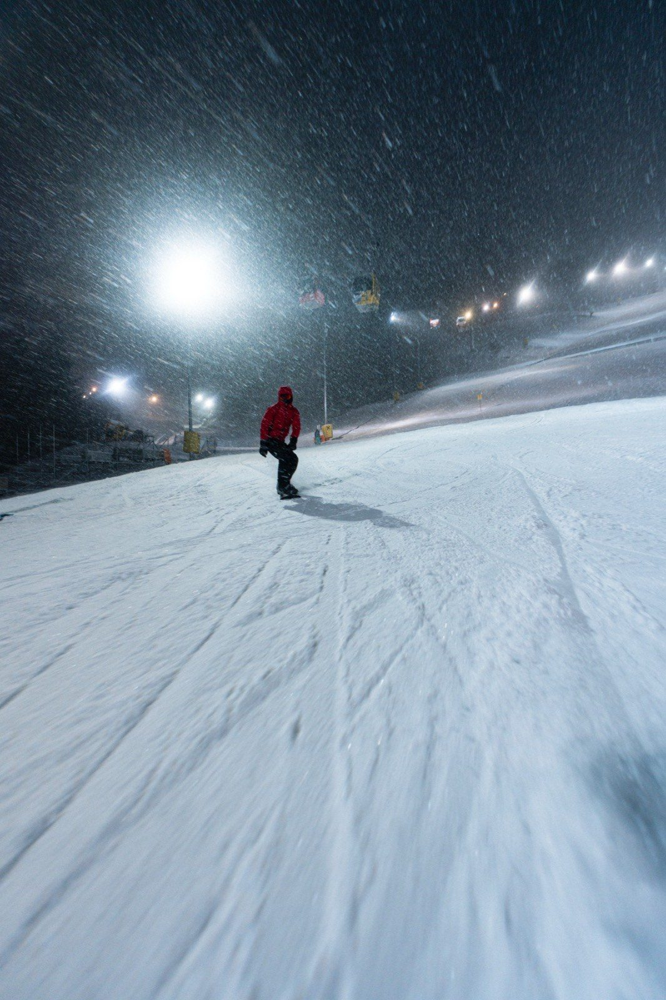
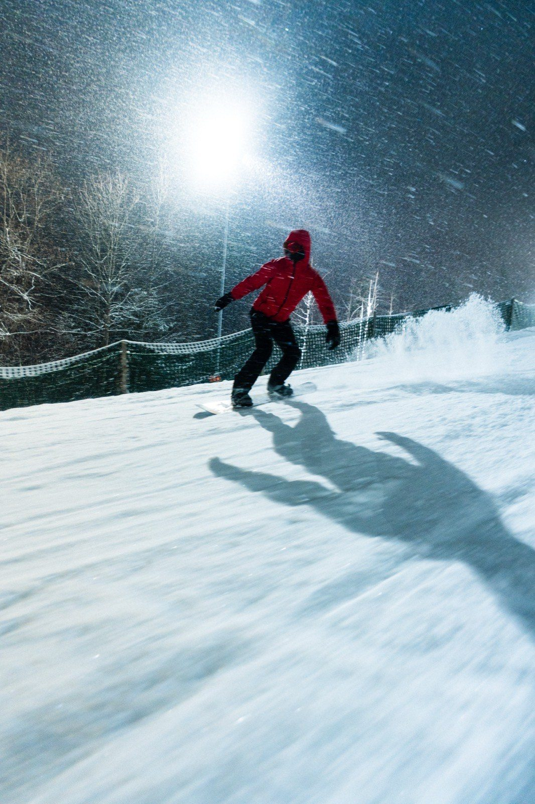
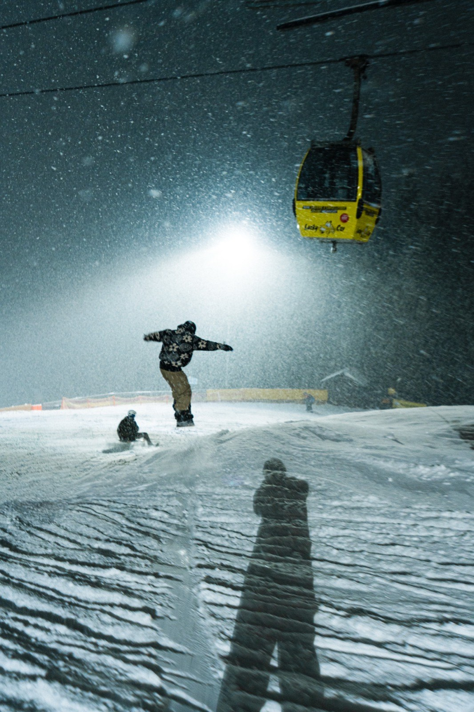
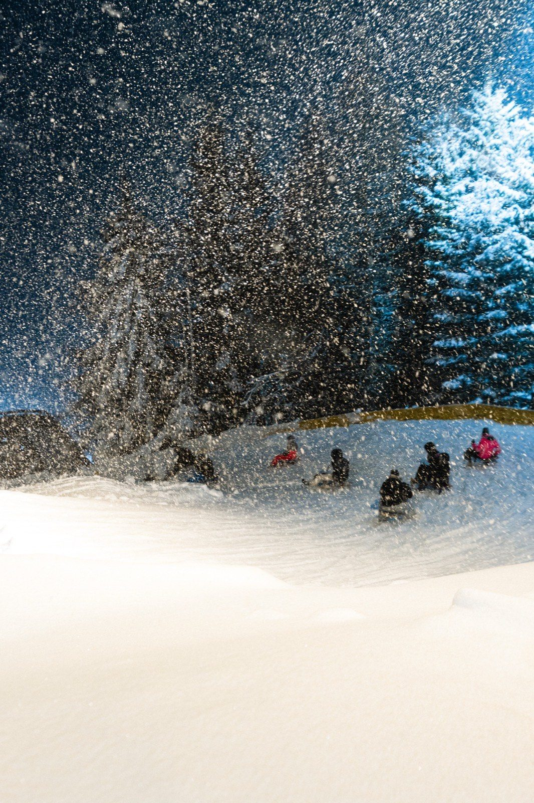
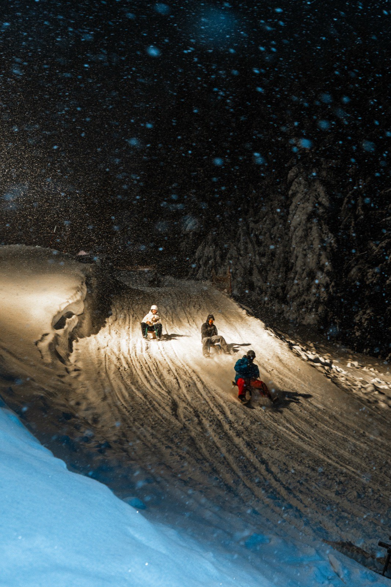
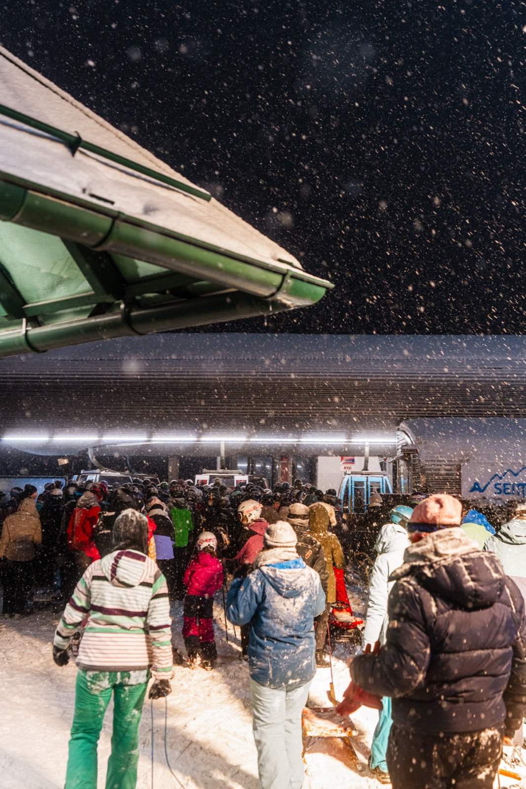

Nachtski & Nachtrodeln am SemmeringNight skiing & night tobogganing at Semmering
Die Nacht zum Tag machenTurning night into day
Ein echtes Highlight im Skigebiet Semmering sind die 6 Nachtpisten, die täglich in der Betriebspause zwischen 16 und 18 Uhr frisch präpariert werden. Mit ihrer Weltcup-tauglichen Beleuchtung bieten sie ein unvergessliches Erlebnis für alle, die auch abends Skifahren oder Rodeln wollen.The 6 night slopes are the real highlight of the Semmering ski area, freshly groomed every day during the operating break between 4 and 6 pm. With their World-Cup-grade lighting they offer an unforgettable experience for everyone who wants to ski or toboggan in the evening too.
Sowohl die Kabinenbahn als auch der Sessellift sind am Abend in Betrieb und sorgen für bequemen Aufstieg auch bei Dunkelheit. Saisonstart traditionell Ende November — als erstes Skigebiet in Niederösterreich; die Nachtpiste folgt Anfang Dezember.Both the gondola and the chairlift run in the evening, ensuring a comfortable ascent even in the dark. The season traditionally starts in late November — the first ski area in Lower Austria to open; the night slope follows in early December.
Nachtbetrieb-KalenderNight-operation calendar
TagesbetriebDay: täglich 9–16 Uhrdaily 9 am–4 pm · NachtbetriebNight: 18–21 Uhr6–9 pm
- 28.–30.11.2025Nur TagesbetriebDay only
- 05.–24.12.2025Nachtski Do–SaNight ski Thu–Sat
- 25.12.2025–10.01.2026Nachtski täglichNight ski daily
- 11.–28.01.2026Nachtski Do–SaNight ski Thu–Sat
- 29.01.–21.02.2026Nachtski täglichNight ski daily
- 22.02.–15.03.2026Nachtski Do–SaNight ski Thu–Sat
Die Termine für die Saison 26/27 folgen im Herbst. Änderungen vorbehalten. Skipisten sind in der Betriebspause (16–18 Uhr) und außerhalb der Betriebszeiten wegen Pistenpräparierung & Beschneiung gesperrt.Season 26/27 dates follow in autumn. Subject to change. Slopes are closed during the operating break (4–6 pm) and outside operating hours for grooming & snowmaking.
Nachtkarten & PreiseNight passes & prices
Nachtkarte · 18–21 UhrNight pass · 6–9 pm
Tag- & NachtkarteDay & night pass
LeihrodelRental toboggan
Alle Winterpreise zzgl. 3 € Keycard-Pfand · Hirschi-Family: das 3. Kind fährt gratis (Tages-/Nachtkarte, Kinder 6–17) · Nachtkarte + Rodel an der Liftkassa erhältlich.All winter prices plus €3 keycard deposit · Hirschi-Family: the third child rides free (day/night pass, ages 6–17) · night pass + toboggan available at the lift till.
Der Abend am Berg — Gastro, Verleih & FamilieYour evening on the mountain — food, rental & family
Après-Ski am LiechtensteinhausAprès-ski at the Liechtensteinhaus
Jeden Samstag ab 12 Uhr: DJ & Show-Acts, in den Weihnachtsferien täglich — Saisonstart 19.12.Every Saturday from noon: DJ & show acts, daily over the Christmas holidays — season opener 19 Dec.
Einkehr nach der NachtpisteA bite after the night slope
Einkehrschwung in die gemütliche SB-Stube des Liechtensteinhauses — oder Dinner im Grand View im Sporthotel, 8 Minuten von der Piste.Swing by the cosy self-service parlour at the Liechtensteinhaus — or have dinner at Grand View in the Sporthotel, 8 minutes from the slope.
Verleih & Kurse am AbendEvening rental & lessons
Sport 2000 Puschi an der Talstation ist im Nachtbetrieb geöffnet — gleiche Zeiten wie die Bergbahnen. Privatstunden der Schneesportschule Zauberberg gibt es auch abends (Voranmeldung).Sport 2000 Puschi at the valley station is open during night operation — same hours as the cable cars. Private lessons with Schneesportschule Zauberberg run in the evening too (advance booking).
Familien bei FlutlichtFamilies under floodlights
Die 3 km Rodelbahn ist beim Nachtbetrieb komplett beleuchtet — Rodeln empfohlen ab ca. 4 Jahren in Begleitung. Hirschi-Family: das 3. Kind fährt gratis, 0–5 Jahre immer gratis.The 3 km toboggan run is fully floodlit at night — tobogganing recommended from about age 4 accompanied. Hirschi-Family: the third child rides free, ages 0–5 always free.
Der Berg leuchtet bis 21 UhrThe mountain glows until 9 pm






Nach 21:00 Uhr bis 8:45 Uhr sind die Pisten gesperrt. In dieser Zeit sind Pistenraupen mit Seilwinden im Einsatz: das Befahren ist lebensgefährlich und verboten.After 9:00 pm until 8:45 am the slopes are closed. Groomers with winch cables operate during this time: entering is life-threatening and prohibited.
Häufige Fragen — NachtbetriebFAQ — night operation
Kann ich eine 3-Stunden-Karte im Nachtbetrieb benutzen?Can I use a 3-hour pass at night?
Gelten Bergerlebnispass oder Ostalpenkarte im Nachtbetrieb?Are the Bergerlebnispass or Ostalpen card valid at night?
Welche Pisten sind beim Nachtbetrieb beleuchtet?Which slopes are floodlit at night?
Von wann bis wann sind die Lifte im Nachtbetrieb geöffnet?When are the lifts open at night?
Kann man die Skiausrüstung auch am Abend ausleihen?Can I rent equipment in the evening too?
Noch mehr FragenMore questions
Alle FAQs für Sommer & Winter →All FAQs for summer & winter →
Wohin als Nächstes?Where to next?